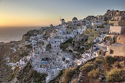
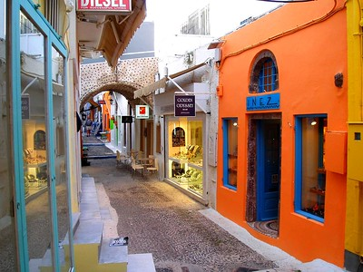
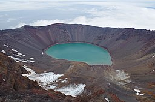
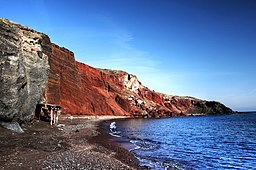

Santorini, Greece
Santorini is the most famous Greek Island. It's beautiful sandy beaches and tropical vibe really make it a very relaxing location to visit. It is a top summer vacation option for anyone looking for a tropical locations with beautiful sights.
Choose Fly Forward Travel Agency if you would like to book a fabulous summer trip. Life is short, take a vacation.
Places to Stay
- Oasis Hotel
- Santorini Mansion
- Villa Manos
- Santorini Secret Suites and Spa
Attractions, in order of superiority
- Fira- Home to the whitewashed cubic houses
- Oia-Beautiful village with many colorful homes and shops
- Caldera- sea filled volcanic crater
- Red Beach
Pictures of these Attractions
| Fira | Fira Wikipedia |  |
|---|---|---|
| Oia | Oia Wikipedia | |
| Caldera | Caldera Wikipedia |  |
| Red Beach | Red Beach Wikipedia |  |